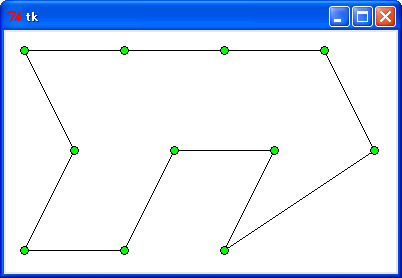
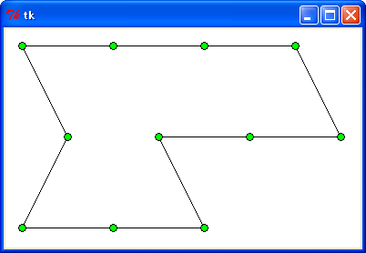
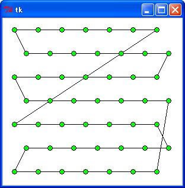
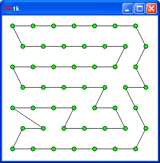
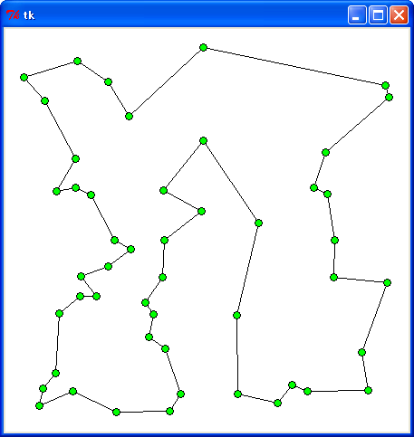
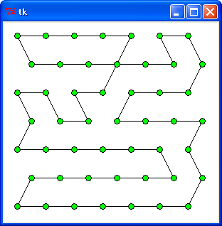
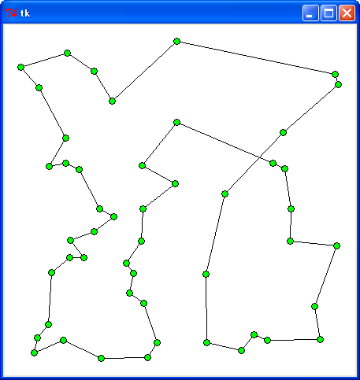
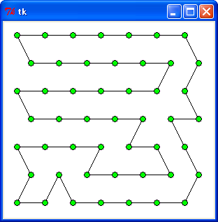
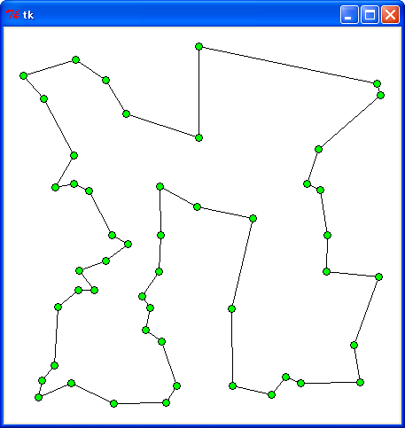
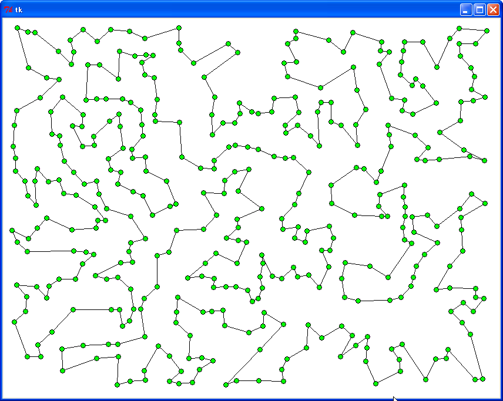

はじめに
巡回セールスマン問題 (TSP) の続きです。今回は「局所探索法 (逐次改善法) 」について説明します。
●局所探索法とは？
局所探索法はあるひとつの解から出発し、それに局所的な変換を繰り返し適用することで解を改良します。最終的には変換を行っても改良できないような解に到達します。これを「局所的な最適解」といいます。一般に、局所的な最適解はたくさんあって、その中には「大域的な最適解 (厳密解) 」も含まれています。局所探索法で厳密解を得る保証はありません。求めた解がたまたま偶然に厳密解と一致する場合もありますが、局所探索法はあくまでも近似解を求める方法であることに注意してください。
TSP は局所探索法がとてもうまくいく問題のひとつで、簡単な変換方法でより良い近似解を求めることができます。今回は基本的な 2-opt 法と or-opt 法について説明します。
●2-opt 法
2-opt 法は最も簡単な変換方法で、任意の 2 本の辺をつなぎ直して別の巡回路を作るというものです。次の図を見てください。
Ａ Ｂ
●==========●
／ ＼ ／ ＼
／ ＼ ／ ＼
●Ｃ × ●Ｄ
＼ ／ ＼ ／
＼ ／ ＼ ／
●==========●
Ｅ Ｆ
[A, F, D, B, E, C]
=> [A, B, D, F, E, C]
--------
逆順にする
図 : 2-opt 法
上図で巡回路 [A, F, D, B, E, C] を考えます。辺 (A, F) と (B, E) は交差しているので、(A, F) を (A, B) に、(B, E) を (E, F) につなぎ直すと、新しい巡回路は [A, B, D, F, E, C] となり距離を短くすることができます。配列上の操作では、A の次から E の手前までの要素を逆に並べ替えることに対応します。
実際には、隣接しない 2 辺の組み合わせ (A, F), (B, E) をすべて調べて、(A, F) + (B, E) > (A, B) + (E, F) であれば 2 辺をつなぎ直して新しい経路を作ります。すべての組み合わせを調べたあと、変換が行われて新しい辺が作成されていた場合、新しい辺と他の辺の組み合わせを調べる必要があることに注意してください。このように、変換が行われなくなるまで処理を繰り返すことにより、局所的な最適解を得ることができるわけです。
ところで、2-opt 法は 2 辺をつなぎ直す変換方法ですが、つなぎ直す辺を 3 本、4 本と増やすこともできます。これを 3-opt 法、4-opt 法と呼びます。もちろん、k 本の辺をつなぎ直す k-opt 法を考えることもできますが、k を増やすと調べなければならない辺の組み合わせが爆発的に増えるため、処理に時間がかかるようになります。このため、k <= 3 とするのが一般的なようです。
●2-opt 法のプログラム
プログラムは次のようになります。
リスト : 2-opt 法
def opt_2(size, path):
global distance_table
total = 0
while True:
count = 0
for i in xrange(size - 2):
i1 = i + 1
for j in xrange(i + 2, size):
if j == size - 1:
j1 = 0
else:
j1 = j + 1
if i != 0 or j1 != 0:
l1 = distance_table[path[i]][path[i1]]
l2 = distance_table[path[j]][path[j1]]
l3 = distance_table[path[i]][path[j]]
l4 = distance_table[path[i1]][path[j1]]
if l1 + l2 > l3 + l4:
# つなぎかえる
new_path = path[i1:j+1]
path[i1:j+1] = new_path[::-1]
count += 1
total += count
if count == 0: break
return path, total
関数 opt_2 は辺 (i, i1) と辺 (j, j1) の組み合わせを生成します。i1 は i + 1 でいいのですが、j1 は配列の末尾から先頭を結ぶ辺があるので、j が末尾であれば j1 は 0 になります。j の初期値は i + 2 とします。また、i が 0 の場合、j1 が 0 になると 2 辺が j - i - i1 と連結するので、j1 が 0 でないことをチェックしています。これで隣接しない (i, i1) と (j, j1) の組み合わせを求めることができます。
次に、辺 (i, i1), (j, j1), (i, j), (i1, j1) の長さを求めて変数 l1, l2, l3, l4 にセットし、l3 + l4 が l1 + l2 よりも短い場合は辺をつなぎ直します。逆順にする部分列を path[i1:j+1] で取り出して new_path にセットします。そして、new_path[::-1] で逆順にした配列を path[i1:j+1] の部分列と置き換えます。Python のスライスを使うと、これらの操作を簡単に行うことができます。
つなぎ直したら変数 count を +1 します。count が 0 であれば、変換は行われなかったので break で while ループを脱出します。そうでなければ、同じ処理を繰り返します。total は 2-opt 法で変換が行われたか表すために使います。2-opt 法による変換がまったく行われなかった場合、total の値は 0 になります。
あとのプログラムは簡単なので説明は割愛します。詳細は プログラムリスト をお読みください。
●実行結果 (1)
それでは実行してみましょう。プログラム tsp.py は次のように起動します。
python tsp.py tsp1 < data_file # 単純な欲張り法 python tsp.py tsp2 < data_file # クラスカルのアルゴリズムの変形版 python tsp.py tsp3 < data_file # 分割統治法 python tsp.py xxxx 2-opt < data_file # 2-opt 法
第 1 引数に巡回路を生成する方法を指定します。第 2 引数に 2-opt を指定すると、生成した巡回路に 2-opt 法を適用します。第 2 引数を省略した場合、局所探索法は適用されません。
最初は厳密解と比較してみましょう。
: TSP1 : TSP2 : TSP3
----------+--------+--------+--------
data0.txt : 1073.1 : 923.6 : 939.3
2-opt : 847.2 : 847,2 : 847.2
data1.txt : 1104.7 : 1106.4 : 970.8
2-opt : 1015.7 : 1015.7 : 947.2
data2.txt : 1206.4 : 1206.4 : 1070.8
2-opt : 1115.7 : 1115.7 : 1070.8
data3.txt : 1467.9 : 1306.4 : 1239.3
2-opt : 1215.7 : 1215.7 : 1147.2
----------+--------+--------+--------
合計 : 4852.1 : 4542.8 : 4220.2
: 4194.3 : 4194.3 : 4012.4
近似比 : 1.216 : 1.139 : 1.058
: 1.052 : 1.052 : 1.006
近似比 = 近似解 / 厳密解
 TSP3 (data3.txt)
 TSP3 + 2-opt (data3.txt)
2-opt 法を適用することで、どの方法でも巡回路の距離は短くなり、近似比は 1 にちかい値になりました。data0.txt はどの方法でも厳密解と一致しました。
次は都市の個数を増やしてみましょう。
: TSP1 | TSP2 : TSP3
------------+---------+---------+---------
data49.txt : 2321.1 : 2313.7 : 2131.3
2-opt : 2062.9 : 2053.5 : 2100.7
data64.txt : 2913.8 : 3168.3 : 2720.5
2-opt : 2662.9 : 2681.8 : 2720.5
data91.txt : 3770.3 : 3803.6 : 3593.6
2-opt : 3416.6 : 3361.8 : 3410.0
data100.txt : 4925.9 : 4516.9 : 4414.9
2-opt : 4260.6 : 4085.0 : 4282.3
------------+---------+---------+---------
合計 : 13931.1 : 13802.5 : 12860.3
2-opt : 12403.0 : 12182.1 : 12513.5
改善率 : 12.3 % : 13.3 % : 2.8 %
 TSP2 (data49.txt)
 TSP2 + 2-opt (data49.txt)
規則的なデータの場合、欲張り法よりも分割統治法のほうが優れていたのですが、2-opt 法を適用すると欲張り法のほうが短い巡回路になりました。分割統治法と 2-opt 法の相性はあまりよくないようです。
次はランダムデータの場合です。
: TSP1 | TSP2 : TSP3
---------+---------+---------+---------
r49.txt : 2731.4 : 2866.4 : 3276.2
2-opt : 2411.4 : 2464.4 : 2696.6
r64.txt : 3619.7 : 3252.4 : 3422.0
2-opt : 2869.1 : 2842.0 : 2914.3
r91.txt : 4072.6 : 3655.3 : 3717.5
2-opt : 3277.4 : 3280.7 : 3337.8
r100.txt : 4389.5 : 4279.2 : 4277.4
2-opt : 3886.3 : 3692.7 : 4058.8
---------+---------+---------+---------
合計 : 14813.2 : 14053.3 : 14693.1
2-opt : 12444.2 : 12279.8 : 13007.5
改善率 : 19.0 % : 14.4 % : 13.0 %
 TSP1 (r49.txt)
TSP1 (r49.txt)
 TSP1 + 2-opt (r49.txt)
ランダムデータの場合、分割統治法でも 2-opt 法は高い効果を発揮するのですが、それ以上に欲張り法との相性がすばらしくて、距離の合計では TSP2 + 2-opt 法が一番短くなりました。規則的なデータも含めて、TSP2 と 2-opt 法の相性はとても良いようです。
●or-opt 法
次は or-opt 法について説明します。or-opt 法は巡回路の一部 (連続する 3 都市以下の経路) を切り出し、それを他の位置に挿入する方法です。次の図を見てください。
Ａ Ｂ Ａ Ｂ
──● ●── ──●─────────●──
＼ ／
＼ ／
＼ ／ Ｃ Ｄ
●─● ●─●
Ｃ Ｄ ／ ＼
────●─────●──── ────● ●────
Ｅ Ｆ Ｅ Ｆ
(Ａ) (Ｂ)
図 ; or-opt 法
上図 (A) の経路 A - C - D - B と E - F において、C - D を E - F に挿入すると上図 (B) のようになります。辺の長さを (X, Y) とすると、(A, C) + (C. D) + (D, B) + (E, F) > (A, B) + (E, C) + (C, D) + (D, F) であれば、巡回路の距離を短くすることができます。
今回はプログラムを簡単にするため、ひとつの都市を挿入するだけの簡易版とします。この場合、or-opt 法による変換は下図のようになります。
Ａ Ｂ Ａ Ｂ
──● ●── ──●───────●──
＼ ／
＼ ／
＼ ／ Ｃ
● ●
Ｃ ／ ＼
────●───●──── ────● ●────
Ｄ Ｅ Ｄ Ｅ
(Ａ) (Ｂ)
図 ; or-opt 法 (簡易版)
上図は都市 C を辺 D - E に挿入します。(A, C) + (C, B) + (D, E) > (A, B) + (D, C) + (C, E) であれば、巡回路の距離を短くすることができます。
●or-opt 法のプログラム
プログラムは次のようになります。
リスト : or-opt 法 (簡易版)
def or_opt(size, path):
global distance_table
total = 0
while True:
count = 0
for i in xrange(size):
# i 番目の都市を (j) - (j1) の経路に挿入する
i0 = i - 1
i1 = i + 1
if i0 < 0: i0 = size - 1
if i1 == size: i1 = 0
for j in xrange(size):
j1 = j + 1
if j1 == size: j1 = 0
if j != i and j1 != i:
l1 = distance_table[path[i0]][path[i]] # i0 - i - i1
l2 = distance_table[path[i]][path[i1]]
l3 = distance_table[path[j]][path[j1]] # j - j1
l4 = distance_table[path[i0]][path[i1]] # i0 - i1
l5 = distance_table[path[j]][path[i]] # j - i - j1
l6 = distance_table[path[i]][path[j1]]
if l1 + l2 + l3 > l4 + l5 + l6:
# つなぎかえる
p = path[i]
path[i:i + 1] = []
if i < j:
path[j:j] = [p]
else:
path[j1:j1] = [p]
count += 1
total += count
if count == 0: break
return path, total
関数 or_opt は i 番目の都市を辺 j - j1 に挿入することを試みます。i のひとつ前の位置を変数 i0 に、ひとつ先の位置を変数 i1 にセットします。i0 が負の値になったら、最後尾の位置に、i1 または j1 が size と等しい場合は 0 に書き換えます。
i が j または j1 と等しい場合、j - j1 の間に i を挿入することはできません。そうでなければ、辺の長さを計算して、条件を満たしていれば経路をつなぎかえます。これは配列 path の i 番目の要素を削除し、j 番目と j1 番目の要素の間に挿入するだけです。削除する位置によって、挿入する位置が変化することに注意してください。あとは 2-opt 法のプログラムと同じです。
●実行結果 (2)
それでは実行してみましょう。
python tsp.py xxxx or-opt < data_file # or-opt 法
第 2 引数に or-opt を指定すると、生成した巡回路に or-opt 法を適用します。
最初は厳密解と比較してみましょう。
: TSP1 : TSP2 : TSP3
----------+--------+--------+--------
data0.txt : 1073.1 : 923.6 : 939.3
or-opt : 847.2 : 847,2 : 847.2
data1.txt : 1104.7 : 1106.4 : 970.8
or-opt : 947.2 : 947.2 : 947.2
data2.txt : 1206.4 : 1206.4 : 1070.8
or-opt : 1047.2 : 1047.2 : 1047.2
data3.txt : 1467.9 : 1306.4 : 1239.3
or-opt : 1147.2 : 1147.2 : 1147.2
----------+--------+--------+--------
合計 : 4852.1 : 4542.8 : 4220.2
: 3988.7 : 3988.7 : 3988.7
近似比 : 1.216 : 1.139 : 1.058
: 1 : 1 : 1
近似比 = 近似解 / 厳密解
どの方法も or-opt 法を適用することで厳密解と一致しました。
次は都市の個数を増やしてみましょう。
: TSP1 | TSP2 : TSP3
------------+---------+---------+---------
data49.txt : 2321.1 : 2313.7 : 2131.3
or-opt : 2099.2 : 2075.5 : 2073.3
data64.txt : 2913.8 : 3168.3 : 2720.5
or-opt : 2626.1 : 2727.2 : 2720.5
data91.txt : 3770.3 : 3803.6 : 3593.6
or-opt : 3407.6 : 3380.7 : 3438.3
data100.txt : 4925.9 : 4516.9 : 4414.9
or-opt : 4195.9 : 4103.9 : 4236.1
------------+---------+---------+---------
合計 : 13931.1 : 13802.5 : 12860.3
or-opt : 12328.8 : 12287.3 : 12468.2
改善率 : 13.0 % : 12.3 % : 3.1 %
TSP2 (data49.txt)
 TSP2 + or-opt (data49.txt)
2-opt 法と同様に、or-opt 法の場合も欲張り法のほうが短い巡回路になりました。分割統治法の場合、改善率は 2-opt 法よりも or-opt 法のほうが少し高くなりました。
次はランダムデータの場合です。
: TSP1 | TSP2 : TSP3
---------+---------+---------+---------
r49.txt : 2731.4 : 2866.4 : 3276.2
or-opt : 2500.9 : 2658.9 : 2538.3
r64.txt : 3619.7 : 3252.4 : 3422.0
or-opt : 3023.2 : 2911.4 : 3087.2
r91.txt : 4072.6 : 3655.3 : 3717.5
or-opt : 3556.3 : 3255,7 : 3267.2
r100.txt : 4389.5 : 4279.2 : 4277.4
or-opt : 3740.8 : 3830.0 : 3675,9
---------+---------+---------+---------
合計 : 14813.2 : 14053.3 : 14693.1
or-opt : 12821.1 : 12656.0 : 12568.6
改善率 : 15.5 % : 11.0 % : 16.9 %
TSP1 (r49.txt)
 TSP1 + or-opt (r49.txt)
ランダムデータの場合、or-opt 法は分割統治法で高い効果を発揮し、距離の合計では一番短くなりましたが、TSP2 + 2-opt 法よりは少し長くなりました。今回の or-opt 法は簡易版にすぎませんが、それでもその効果はとても高いことがわかります。
ところで、生成された巡回路を見てもらえばおわかりのように、交差している経路がありますね。このあと 2-opt 法を適用すると、さらに巡回路を改善することができると思われます。そこで、2-opt 法と or-opt 法を組み合わせて巡回路を改善してみることにしましょう。
●2-opt 法と or-opt 法の組み合わせ
2-opt 法と or-opt 法を組み合わせる場合、最初に適用する方法によって 2 通りの方法が考えられます。最初に 2-opt 法を適用する場合を optimize1 とし、or-opt 法を適用する場合を optimize2 としましょう。プログラムは次のようになります。
リスト : 2-opt 法と or-opt 法の組み合わせ
def optimize1(size, path):
while True:
path, _ = opt_2(size, path)
path, flag = or_opt(size, path)
if flag == 0: return path
def optimize2(size, path):
while True:
path, _ = or_opt(size, path)
path, flag = opt_2(size, path)
if flag == 0: return path
optimize1 は関数 opt_2 を実行してから関数 or_opt を実行します。or_opt で変換が一度でも行われない場合、flag の値は 0 になります。このとき、break で while ループを脱出します。そうでなければ、opt_2 と or_opt を繰り返し実行します。optimize2 は最初に or_opt を実行します。あとは optimize1 と同じです。
●実行結果 (3)
それでは実行してみましょう。
python tsp.py xxxx opt1 < data_file # optimize1 を適用 python tsp.py xxxx opt2 < data_file # optimize2 を適用
第 2 引数に opt1 を指定すると、生成した巡回路に optimize1 を適用します。opt2 を指定すると optimize2 を適用します。
data0.txt から data3.txt の場合、どちらの方法でも得られた解は厳密解と一致しました。
規則的なデータの場合、実行結果は次のようになりました。
: TSP1 | TSP2 : TSP3
------------+---------+---------+---------
data49.txt : 2321.1 : 2313.7 : 2131.3
opt1 : 2035.5 : 2035.5 : 2073.3
data64.txt : 2913.8 : 3168.3 : 2720.5
opt1 : 2626.1 : 2645.0 : 2720.5
data91.txt : 3770.3 : 3803.6 : 3593.6
opt1 : 3334.2 : 3334.4 : 3410.0
data100.txt : 4925.9 : 4516.9 : 4414.9
opt1 : 4131.1 : 4085.0 : 4236.1
------------+---------+---------+---------
合計 : 13931.1 : 13802.5 : 12860.3
opt1 : 12146.9 : 12099.1 : 12439.9
改善率 : 14.7 % : 14.1 % : 3.4 %
: TSP1 | TSP2 : TSP3
------------+---------+---------+---------
data49.txt : 2321.1 : 2313.7 : 2131.3
opt2 : 2035.5 : 2035.5 : 2073.3
data64.txt : 2913.8 : 3168.3 : 2720.5
opt2 : 2626.1 : 2662.9 : 2720.5
data91.txt : 3770.3 : 3803.6 : 3593.6
opt2 : 3343.9 : 3343.9 : 3438.3
data100.txt : 4925.9 : 4516.9 : 4414.9
opt2 : 4132.2 : 4103.9 : 4236.1
------------+---------+---------+---------
合計 : 13931.1 : 13802.5 : 12860.3
opt2 : 12137.7 : 12145.5 : 12468.6
改善率 : 14.8 % : 13.6 % : 3.1 %
TSP2 (data49.txt)
 TSP2 + opt1 (data49.txt)
欲張り法の場合、どちらの方法でも効果はとても高いのですが、距離の合計値をみると TSP-2 + optimize1 が一番短い距離になりました。分割統治法の場合、規則的なデータに局所探索法を適用するのはあまりよくない結果となりました。
次はランダムデータの場合です。
: TSP1 | TSP2 : TSP3
---------+---------+---------+---------
r49.txt : 2731.4 : 2866.4 : 3276.2
opt1 : 2376.3 : 2376.3 : 2406.2
r64.txt : 3619.7 : 3252.4 : 3422.0
opt1 : 2801.6 : 2826.1 : 2778.8
r91.txt : 4072.6 : 3655.3 : 3717.5
opt1 : 3152.2 : 3264.4 : 3144.6
r100.txt : 4389.5 : 4279.2 : 4277.4
opt1 : 3751.2 : 3617.1 : 3744.6
---------+---------+---------+---------
合計 : 14813.2 : 14053.3 : 14693.1
opt1 : 12081.3 : 12083.9 : 12074.2
改善率 : 22.6 % : 16.3 % : 21.7 %
: TSP1 | TSP2 : TSP3
---------+---------+---------+---------
r49.txt : 2731.4 : 2866.4 : 3276.2
opt2 : 2376.3 : 2499.7 : 2538.3
r64.txt : 3619.7 : 3252.4 : 3422.0
opt2 : 2845.3 : 2900.1 : 2933.9
r91.txt : 4072.6 : 3655.3 : 3717.5
opt2 : 3267.5 : 3170.5 : 3267.2
r100.txt : 4389.5 : 4279.2 : 4277.4
opt2 : 3649.2 : 3690.5 : 3648.5
---------+---------+---------+---------
合計 : 14813.2 : 14053.3 : 14693.1
opt2 : 12138.3 : 12260.8 : 12387.9
改善率 : 22.0 % : 14.5 % : 18.6 %
TSP1 (r49.txt)
 TSP1 + opt1 (r49.txt)
ランダムデータの場合、どの方法でも optimize1 の改善率が高くなりました。2-opt 法も or-opt 法も簡単な方法ですが、それを組み合わせることにより高い効果を発揮させることができます。
最後に、400 個の都市をランダムに配置した場合の結果を示します。時間の単位は秒です。
C>python tsp.py tsp1 opt1 < r400.txt 15166.3596945 (TSP1 の距離) 0.0368775919845 (TSP1 の時間) 11800.0481754 (TSP1 + opt1 の距離) 4.12403894908 (opt1 の時間)

TSP1 + opt1 (r400.txt)
C>python tsp.py tsp2 opt1 < r400.txt 14010.1103064 (TSP2 の距離) 13.1996116825 (TSP2 の時間) 11599.4930905 (TSP2 + opt1 の距離) 2.62474727933 (opt1 の時間)

TSP2 + opt1 (r400.txt)
C>python tsp.py tsp3 opt1 < r400.txt 14872.6622913 (TSP3 の距離) 0.0247590126678 (TSP3 の時間) 12249.7912402 (TSP3 + opt1 の距離) 4.99307565626 (opt1 の時間)
TSP3 + opt1 (r400.txt)
時間はかかりますが、TSP2 + optimize1 が一番短い距離になりました。興味のある方はいろいろなデータで試してみてください。
●プログラムリスト
# coding: utf-8
#
# tsp.py : 巡回セールスマン問題
#
# Copyright (C) 2012 Makoto Hiroi
#
import sys
import math
import time
from pqueue import *
from unionfind import *
from Tkinter import *
# 標準入力よりデータを読み込む
def read_data():
buff = []
for a in sys.stdin:
b = a.split()
buff.append((int(b[0]), int(b[1])))
return buff
# 距離の計算
def distance(ps):
size = len(ps)
table = [[0] * size for _ in xrange(size)]
for i in xrange(size):
for j in xrange(size):
if i != j:
dx = ps[i][0] - ps[j][0]
dy = ps[i][1] - ps[j][1]
table[i][j] = math.sqrt(dx * dx + dy * dy)
return table
# 経路の長さ
def path_length(path):
global distance_table
n = 0
i = 1
for i in xrange(1, len(path)):
n += distance_table[path[i - 1]][path[i]]
n += distance_table[path[0]][path[-1]]
return n
###
### 局所探索法
###
# 2-opt 法
def opt_2(size, path):
global distance_table
total = 0
while True:
count = 0
for i in xrange(size - 2):
i1 = i + 1
for j in xrange(i + 2, size):
if j == size - 1:
j1 = 0
else:
j1 = j + 1
if i != 0 or j1 != 0:
l1 = distance_table[path[i]][path[i1]]
l2 = distance_table[path[j]][path[j1]]
l3 = distance_table[path[i]][path[j]]
l4 = distance_table[path[i1]][path[j1]]
if l1 + l2 > l3 + l4:
# つなぎかえる
new_path = path[i1:j+1]
path[i1:j+1] = new_path[::-1]
count += 1
total += count
if count == 0: break
return path, total
# or-opt 法 (簡略版)
def or_opt(size, path):
global distance_table
total = 0
while True:
count = 0
for i in xrange(size):
# i 番目の都市を (j) - (j1) の経路に挿入する
i0 = i - 1
i1 = i + 1
if i0 < 0: i0 = size - 1
if i1 == size: i1 = 0
for j in xrange(size):
j1 = j + 1
if j1 == size: j1 = 0
if j != i and j1 != i:
l1 = distance_table[path[i0]][path[i]] # i0 - i - i1
l2 = distance_table[path[i]][path[i1]]
l3 = distance_table[path[j]][path[j1]] # j - j1
l4 = distance_table[path[i0]][path[i1]] # i0 - i1
l5 = distance_table[path[j]][path[i]] # j - i - j1
l6 = distance_table[path[i]][path[j1]]
if l1 + l2 + l3 > l4 + l5 + l6:
# つなぎかえる
p = path[i]
path[i:i + 1] = []
if i < j:
path[j:j] = [p]
else:
path[j1:j1] = [p]
count += 1
total += count
if count == 0: break
return path, total
# 組み合わせ
def optimize1(size, path):
while True:
path, _ = opt_2(size, path)
path, flag = or_opt(size, path)
if flag == 0: return path
def optimize2(size, path):
while True:
path, _ = or_opt(size, path)
path, flag = opt_2(size, path)
if flag == 0: return path
###
### 単純な欲張り法 (Nearest Neighbor 法)
###
def greedy0(path):
global distance_table
size = len(path)
for i in xrange(size - 1):
min_len = 1000000
min_pos = 0
for j in xrange(i + 1, size):
l = distance_table[path[i]][path[j]]
if l < min_len:
min_len = l
min_pos = j
path[i + 1], path[min_pos] = path[min_pos], path[i + 1]
return path
###
### クラスカルのアルゴリズムの変形版
###
# 辺の定義
class Edge:
def __init__(self, p1, p2, weight):
self.p1 = p1
self.p2 = p2
self.weight = weight
def __cmp__(x, y):
return x.weight - y.weight
# 辺のデータを作成
def make_edge(size):
global distance_table
edges = PQueue()
for i in xrange(0, size - 1):
for j in xrange(i + 1, size):
e = Edge(i, j, distance_table[i][j])
edges.push(e)
return edges
# 辺から経路へ
def edge_to_path(edges, size):
def search_edge(x):
r = []
for i in xrange(size):
if edges[i].p1 == x:
r.append(edges[i].p2)
elif edges[i].p2 == x:
r.append(edges[i].p1)
return r
#
path = [0] * size
for i in xrange(size - 1):
x, y = search_edge(path[i])
if i == 0:
path[i + 1] = x
path[-1] = y
elif path[i - 1] == x:
path[i + 1] = y
else:
path[i + 1] = x
return path
# 探索
def greedy1(size):
edges = make_edge(size)
edge_count = [0] * size
u = UnionFind(size)
i = 0
select_edge = []
while i < size:
e = edges.pop()
if edge_count[e.p1] < 2 and edge_count[e.p2] < 2 and (u.find(e.p1) != u.find(e.p2) or i == size - 1):
u.union(e.p1, e.p2)
edge_count[e.p1] += 1
edge_count[e.p2] += 1
select_edge.append(e)
i += 1
return edge_to_path(select_edge, size)
###
### 分割統治法
###
# 分割する方向を決定する
def divide_direction(buff):
x1 = min(map(lambda x: point_table[x][0], buff))
y1 = min(map(lambda x: point_table[x][1], buff))
x2 = max(map(lambda x: point_table[x][0], buff))
y2 = max(map(lambda x: point_table[x][1], buff))
return x2 - x1 > y2 - y1
# 分割する
def divide(buff, comp):
buff.sort(comp)
n = len(buff) / 2
buff1 = buff[:(n+1)]
buff2 = buff[n:]
return buff[n], buff1, buff2
# 差分を計算する
def differ(p, c, q):
return distance_table[p][c] + distance_table[c][q] - distance_table[p][q]
# 共有点を探す
def search(x, buff):
for i in xrange(len(buff)):
if buff[i] == x:
if i == 0: return len(buff) - 1, i, i + 1
if i == len(buff) - 1: return i - 1, i, 0
return i - 1, i, i + 1
# 挿入するための新しい経路を作る
def make_new_path(buff, c, succ):
path = []
i = c + succ
while True:
if i < 0: i = len(buff) - 1
elif i >= len(buff): i = 0
if i == c: break
path.append(buff[i])
i += succ
return path
# 併合する
# buff1 = [a, b, c, d, e]
# buff2 = [f, g, c, h, i]
# (1) b - g => [a, b, g, f, i, h, c, d, e]
# (2) d - h => [a, b, c, g, f, i, h, d, e]
# (3) b - h => [a, b, h, i, f. g. c, d, e]
# (4) d - g => [a, b. c. h, i, f, g, d, e]
def merge(buff1, buff2, p):
# 共有ポイントを探す
p1, i1, n1 = search(p, buff1)
p2, i2, n2 = search(p, buff2)
# 差分を計算
d1 = differ(buff1[p1], p, buff2[p2])
d2 = differ(buff1[n1], p, buff2[n2])
d3 = differ(buff1[p1], p, buff2[n2])
d4 = differ(buff1[n1], p, buff2[p2])
# 差分が一番大きいものを選択
d = max(d1, d2, d3, d4)
if d1 == d:
# (1)
buff1[i1:i1] = make_new_path(buff2, i2, -1)
elif d2 == d:
# (2)
buff1[n1:n1] = make_new_path(buff2, i2, -1)
elif d3 == d:
# (3)
buff1[i1:i1] = make_new_path(buff2, i2, 1)
else:
# (4)
buff1[n1:n1] = make_new_path(buff2, i2, 1)
return buff1
# 分割統治法による解法
def divide_merge(buff):
if len(buff) <= 3:
# print buff
return buff
else:
if divide_direction(buff):
p, b1, b2 = divide(buff, lambda x, y: point_table[x][0] - point_table[y][0])
else:
p, b1, b2 = divide(buff, lambda x, y: point_table[x][1] - point_table[y][1])
b3 = divide_merge(b1)
b4 = divide_merge(b2)
return merge(b3, b4, p)
###
### データの入力
###
point_table = read_data()
point_size = len(point_table)
distance_table = distance(point_table)
###
### 実行
###
s = time.clock()
if sys.argv[1] == 'tsp1':
path = greedy0(range(point_size))
elif sys.argv[1] == 'tsp2':
path = greedy1(point_size)
else:
path = divide_merge(range(point_size))
print path_length(path)
print time.clock() - s
# 局所探索法 (逐次改善法)
if len(sys.argv) > 2:
s = time.clock()
if sys.argv[2] == '2-opt':
path, _ = opt_2(point_size, path)
elif sys.argv[2] == 'or-opt':
path, _ = or_opt(point_size, path)
elif sys.argv[2] == 'opt1':
path = optimize1(point_size, path)
else:
path = optimize2(point_size, path)
print path_length(path)
print time.clock() - s
###
### 経路の表示
###
def draw_path(path):
x0, y0 = path[0]
for i in xrange(1, len(path)):
x1, y1 = path[i]
c0.create_line(x0, y0, x1, y1)
x0, y0 = x1, y1
c0.create_line(x0, y0, path[0][0], path[0][1])
for x, y in path:
c0.create_oval(x - 4, y - 4, x + 4, y + 4, fill = "green")
max_x = max(map(lambda x: x[0], point_table)) + 20
max_y = max(map(lambda x: x[1], point_table)) + 20
root = Tk()
c0 = Canvas(root, width = max_x, height = max_y, bg = "white")
c0.pack()
draw_path(map(lambda x: point_table[x], path))
root.mainloop()